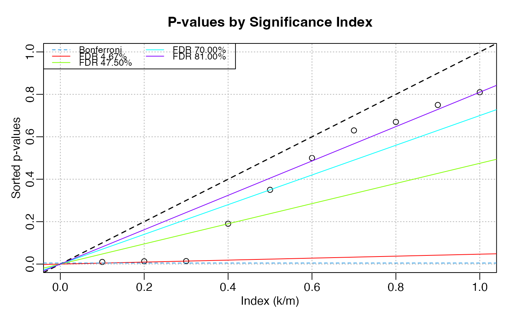

Calculate Benjamini-Hochberg FDR Corrected Values
p_value_FDR.RdCalculation and diagnostic plots to explain how B-H FDR procedure works via Benjamini-Hochberg "step-up" correction. FDR corrected p-values are calculated from scratch and reported with other elements/steps of the procedure.
Usage
p_value_FDR(p, alpha = 0.05)
# S3 method for class 'fdr'
plot(x, ...)Arguments
- p
A numeric vector of p-values.
- alpha
numeric(1). Significance level in[0, 1].- x
A
fdrobject.- ...
Unused. For compliance with the
plot()generic default params.
Value
A fdr object. A tibble for the step-up procedure.
The tibble contains:
- p.value
A sorted vector of the original p-values.
- penalty (
k/m) The threshold value, corresponding to
k / m(slope).- threshold
The threshold value, corresponding to
alpha * k / m.- p_hat
Term in the minimum function corresponding to
p * m / k.- fdr
The FDR-adjusted p-values.
- idx
The indices of the original p-values.
- fdr_p
The FDR-adjusted p-values ordered by
idx.- alpha
The chosen significance threshold.
References
Benjamini, Y., and Hochberg, Y. (1995). Controlling the false discovery rate: a practical and powerful approach to multiple testing. Journal of the Royal Statistical Society Series B 57, 289-300.
http://www.unc.edu/courses/2007spring/biol/145/001/docs/lectures/Nov12.html
http://en.wikipedia.org/wiki/False_discovery_rate#Benjamini.E2.80.93Hochberg_procedure
Examples
p1 <- c(0.01, 0.013, 0.014, 0.19, 0.35, 0.5, 0.63, 0.67, 0.75, 0.81)
new <- p_value_FDR(p1)
new
#> # A tibble: 10 × 8
#> p_value `penalty (k/m)` threshold p_hat fdr idx fdr_p alpha
#> * <dbl> <dbl> <dbl> <dbl> <dbl> <int> <dbl> <chr>
#> 1 0.01 0.1 0.005 0.1 0.0467 1 0.0467 sig.
#> 2 0.013 0.2 0.01 0.065 0.0467 2 0.0467 sig.
#> 3 0.014 0.3 0.015 0.0467 0.0467 3 0.0467 sig.
#> 4 0.19 0.4 0.02 0.475 0.475 4 0.475 null
#> 5 0.35 0.5 0.025 0.7 0.7 5 0.7 null
#> 6 0.5 0.6 0.03 0.833 0.81 6 0.81 null
#> 7 0.63 0.7 0.035 0.9 0.81 7 0.81 null
#> 8 0.67 0.8 0.04 0.838 0.81 8 0.81 null
#> 9 0.75 0.9 0.045 0.833 0.81 9 0.81 null
#> 10 0.81 1 0.05 0.81 0.81 10 0.81 null
old <- p.adjust(p1, method = "fdr")
all.equal(new$fdr_p, old)
#> [1] TRUE
plot(new)

p2 <- withr::with_seed(1001, runif(10, 0.0005, 0.3))
p_value_FDR(p2)
#> # A tibble: 10 × 8
#> p_value `penalty (k/m)` threshold p_hat fdr idx fdr_p alpha
#> * <dbl> <dbl> <dbl> <dbl> <dbl> <int> <dbl> <chr>
#> 1 0.00233 0.1 0.005 0.0233 0.0233 7 0.184 sig.
#> 2 0.0248 0.2 0.01 0.124 0.124 8 0.287 null
#> 3 0.0870 0.3 0.015 0.290 0.184 9 0.296 null
#> 4 0.124 0.4 0.02 0.310 0.184 2 0.124 null
#> 5 0.126 0.5 0.025 0.252 0.184 4 0.184 null
#> 6 0.128 0.6 0.03 0.214 0.184 5 0.184 null
#> 7 0.129 0.7 0.035 0.184 0.184 3 0.184 null
#> 8 0.230 0.8 0.04 0.287 0.287 10 0.296 null
#> 9 0.266 0.9 0.045 0.296 0.296 6 0.184 null
#> 10 0.296 1 0.05 0.296 0.296 1 0.0233 null
p3 <- withr::with_seed(669, c(runif(10), rep(0.5, 10)))
p_value_FDR(p3)
#> # A tibble: 20 × 8
#> p_value `penalty (k/m)` threshold p_hat fdr idx fdr_p alpha
#> * <dbl> <dbl> <dbl> <dbl> <dbl> <int> <dbl> <chr>
#> 1 0.0616 0.05 0.0025 1 0.526 1 0.526 null
#> 2 0.0727 0.1 0.005 0.727 0.526 9 0.526 null
#> 3 0.246 0.15 0.0075 1 0.526 8 0.526 null
#> 4 0.247 0.2 0.01 1 0.526 4 0.526 null
#> 5 0.274 0.25 0.0125 1 0.526 5 0.526 null
#> 6 0.350 0.3 0.015 1 0.526 10 0.526 null
#> 7 0.421 0.35 0.0175 1 0.526 6 0.526 null
#> 8 0.446 0.4 0.02 1 0.526 2 0.526 null
#> 9 0.461 0.45 0.0225 1 0.526 7 0.526 null
#> 10 0.5 0.5 0.025 1 0.526 11 0.526 null
#> 11 0.5 0.55 0.0275 0.909 0.526 12 0.526 null
#> 12 0.5 0.6 0.03 0.833 0.526 13 0.526 null
#> 13 0.5 0.65 0.0325 0.769 0.526 14 0.526 null
#> 14 0.5 0.7 0.035 0.714 0.526 15 0.526 null
#> 15 0.5 0.75 0.0375 0.667 0.526 16 0.526 null
#> 16 0.5 0.8 0.04 0.625 0.526 17 0.526 null
#> 17 0.5 0.85 0.0425 0.588 0.526 18 0.526 null
#> 18 0.5 0.9 0.045 0.556 0.526 19 0.526 null
#> 19 0.5 0.95 0.0475 0.526 0.526 20 0.727 null
#> 20 0.727 1 0.05 0.727 0.727 3 0.526 null
p4 <- withr::with_seed(101, c(runif(200), runif(25, 0.01, 0.1)))
p_value_FDR(p4)
#> # A tibble: 225 × 8
#> p_value `penalty (k/m)` threshold p_hat fdr idx fdr_p alpha
#> * <dbl> <dbl> <dbl> <dbl> <dbl> <int> <dbl> <chr>
#> 1 0.00859 0.00444 0.000222 1 0.421 186 0.994 null
#> 2 0.0102 0.00889 0.000444 1 0.421 85 0.827 null
#> 3 0.0113 0.0133 0.000667 0.848 0.421 215 0.994 null
#> 4 0.0136 0.0178 0.000889 0.767 0.421 220 0.999 null
#> 5 0.0165 0.0222 0.00111 0.742 0.421 192 0.994 null
#> 6 0.0183 0.0267 0.00133 0.687 0.421 90 0.827 null
#> 7 0.0189 0.0311 0.00156 0.606 0.421 206 0.994 null
#> 8 0.0191 0.0356 0.00178 0.537 0.421 67 0.747 null
#> 9 0.0202 0.04 0.002 0.504 0.421 39 0.435 null
#> 10 0.0233 0.0444 0.00222 0.525 0.421 102 0.907 null
#> # ℹ 215 more rows